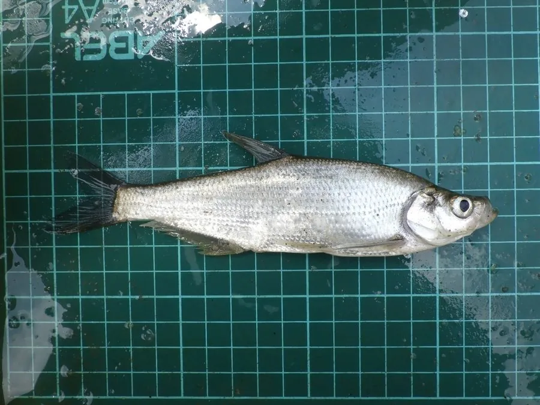

鱼类 · 动物界
翘嘴鲌 Culter alburnus

中国江河湖泊中的大型肉食性鱼类，下颌向上翘起，游速极快，常在水面追捕小鱼，是路亚垂钓者喜爱的对象鱼。
- 分类
- 门脊索动物门纲硬骨鱼纲目鲤形目科鲤科属鲌属
- 栖息环境
- 江河、湖泊和水库的中上层，喜开阔、水质清新的水域
- 地理分布
- 中国长江、黄河、珠江、黑龙江等水系及大型湖泊水库
- 保护级别
- 暂无评估；中国未列入国家重点保护野生动物名录
物种志
翘嘴鲌体细长、侧扁，头小，下颌突出并向上翘起，口上位，这就是“翘嘴”名称的由来。体色银白，背部灰蓝，各鳍灰白。成鱼体长一般 30–60 cm，体重 0.5–3 kg，最大可超过 1 m、体重 10 kg 以上，是江河湖泊中体型较大的肉食性鱼类。
翘嘴鲌分布于中国长江、黄河、珠江、黑龙江等水系及各大湖泊，多在水体中上层活动。它是肉食性鱼类，捕食小鱼、虾类和水生昆虫，游速很快，常成群追捕猎物，会把小鱼赶到水面形成水花四溅的“炸水”场面。繁殖期在 5–7 月，亲鱼在江河缓流处产卵。翘嘴鲌生长较快，肉质细嫩，是重要的经济鱼类，也是路亚钓鱼爱好者最喜欢的对象鱼之一；在大型湖泊和水库中，它常被作为增殖放流的品种。目前它没有IUCN 的正式评估，中国未将其列入国家重点保护野生动物名录。
形态与习性
- 食性肉食性，捕食小鱼、虾类和水生昆虫
- 体长一般 30–60 cm，最大可超过 1 m
- 体重常见 0.5–3 kg，最大可超过 10 kg
- 繁殖5–7 月在江河缓流处产卵
- 习性多在水体中上层活动，游速快，常成群追捕小鱼
- 寿命约 8–12 年
趣味知识
- 翘嘴鲌的下颌向上翘起，嘴巴朝上，方便在水面附近捕食小鱼。
- 它追捕猎物时会把小鱼赶到水面，形成水花四溅的“炸水”场面。
- 翘嘴鲌是路亚钓鱼爱好者最喜爱的对象鱼之一，最大个体可超过 1 m。